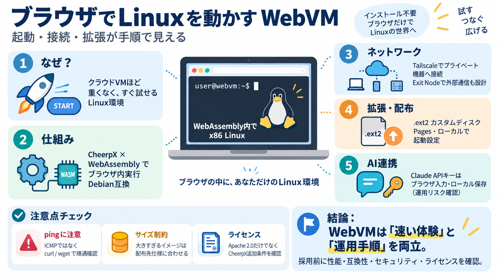

WebVM: Run Linux in Browser with WebAssembly & Tailscale
x86-to-WebAssembly JIT execution - CheerpX compiles x86-64 instructions to WebAssembly at runtime, enabling unmodified D…

ブラウザでLinuxを動かす
Webブラウザ上でLinux仮想マシンを動かす「WebVM（webvm）」の仕組み、ネットワーク（Tailscale）、ディスクイメージ(.ext2)、デプロイ、Claude連携、ライセンス上の要点を一気に整理します。
なぜ今、WebVM？
「クラウドVMを立てるほどではないが、Linux環境をすぐ試したい」場面が多い一方、ローカル環境準備は手間になりがちです（=検証・学習の速度が落ちる）。
WebVMは「体験を速く」しつつ、Tailscaleやカスタムディスクで「運用可能」に寄せる方針です（体験価値×実装手順）。
考え方
WebVMは「サーバー上のVM常駐」を前提にせず、主要な実行をブラウザ内（WebAssembly）に寄せます。結果として、開始障壁を下げる設計になります（server-less virtual environment running fully client-side）。
ただしネットワーク到達やClaude利用など、外部サービスは別途必要になります（“実行場所”と“通信先”を分けて考える）。
中核コンポーネント
WebVMはCheerpXの仮想化エンジンとWebAssemblyを活用し、x86 Linux環境をブラウザ内で動かすことを目的としています（GitHubの “webvm” リポジトリ）。
ここが“成立根拠”で、WebVMは「技術の土台」と「体験の作り込み」を両方用意しています。
ネットワーク設計
WebVMは主にTailscaleと統合し、プライベートネットワーク内の機器へアクセス可能にする運用が示されています。通信範囲はTailscaleの設定で決まります。
ping等の一部低レベル操作は制約があるため、疎通確認はcurlやwgetを使うべきです。
出口ノード
「インターネットに出る/出ない」はWebVM側だけで決まらず、TailscaleのExit Node（出口ノード）を別デバイスで広告するかがポイントです。
“どこまで到達できるか”を最初に設計すると、後工程（検証・疎通・用途）が楽になります。
疎通確認のコツ
入力データでは「一部の低レベルネットワーク操作（特にICMPのping）は現在利用できない」とされています。代替としてcurlやwgetで疎通確認するのが案内されています。
同じ「疎通」でも、使うプロトコル（ICMP vs HTTP）で体験が変わります。
環境拡張
WebVMはVMイメージ（例：.ext2）をディスク領域として扱い、カスタムイメージで環境を拡張できます。ローカル実行でも参照先を指定する構成です。
さらにGitHub ActionsでDockerfileからカスタム .ext2 をビルドし公開する流れも用意されています。
公開の道筋
GitHub Pagesへデプロイする手順として、Fork→Pages設定→Actions実行が用意されています。これにより配布形態を作れます。
ローカルとPagesの双方で「ディスク参照」と「起動設定」の考え方を揃えるのがポイントです。
現実の制約
GitHub Pagesには画像サイズ制約があり、debian_large が大きすぎるため不可、という現実的な制約が読み取れます。運用設計には“サイズ”も含める必要があります。
「何でも大きいイメージを載せれば良い」ではなく、配布先仕様に合わせて作るのが安全です。
AI連携
Claude AI連携ではAnthropicのAPIキーをブラウザに入力して利用する方式が示されています。キーはサーバーへ送信されず、ローカルに保存される旨が説明されています。
ただし共有PCやブラウザ同期など、運用前提でリスクは変わります（“安全”は環境依存）。
脅威と注意
入力データにはサンドボックス実行やキー非共有の説明がありますが、詳細な脅威モデル（どこまで隔離されるか）は十分に掘り下げられていません。安心して使うには、制限事項を前提に運用設計が必要です。
仕様の「できる/できない」を、実際の運用条件で再確認する姿勢が重要です。
法務の落とし穴
リポジトリはApache 2.0として配布されていますが、CheerpXビルドの再配布・ホスティング目的利用には商用ライセンスが必要、という注意が明記されています。単純にリポジトリのライセンスだけでは判断できません。
組織利用や製品組み込みを考えるなら、追加条項の確認が必須です。
結論
WebVMは「ブラウザでLinuxを素早く試す」体験と、「Tailscale・ディスクイメージ・Pages/ローカル」の実装手順を両立しています。採用判断では性能・互換性・セキュリティ詳細・ライセンス追加条件を追加で確認すると精度が上がります。
（訳語）サーバーレス/サンドボックス：server-less（サーバー常駐が前提ではない）、sandbox（隔離実行）— どちらも“定義と実装の範囲”を運用前提で確認してください。
x86-to-WebAssembly JIT execution - CheerpX compiles x86-64 instructions to WebAssembly at runtime, enabling unmodified D…
## Benchmarks Not only does CheerpX achieve unprecedented flexibility in running binary applications as part of Web app…
WebVM is powered by the CheerpX virtualization engine, and enables safe, sandboxed client-side execution of x86 binaries…
Curiously, the Debian build is not as optimized as it should be. It ships a very thin nodejs executable whose only purpo…
WebVM isn’t a toy demo. It’s a proof point: if you can JIT-compile x86 to WASM with acceptable performance, the browser …